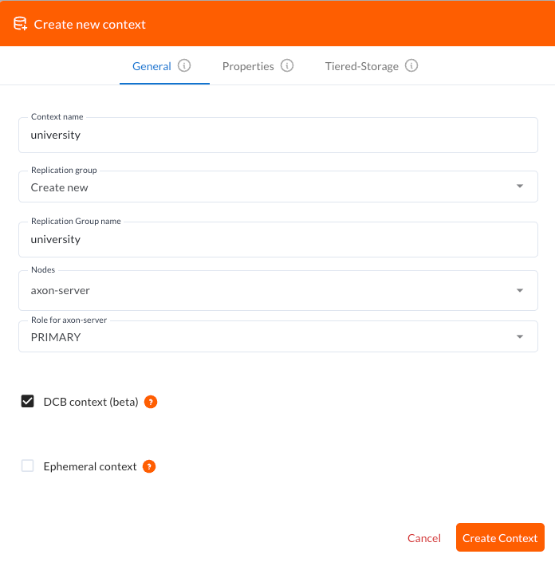
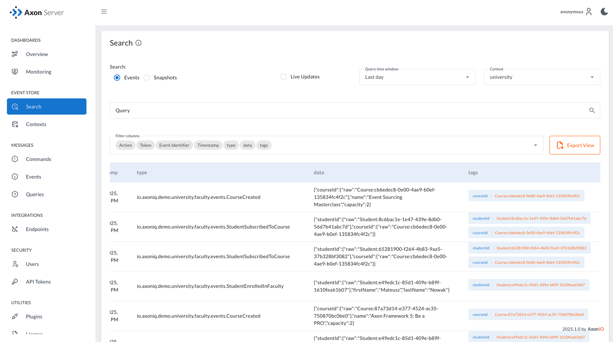

Connecting to Axon Server
While the in-memory Event Store is perfect for getting started and understanding the concepts, real applications need persistent storage. This is where Axon Server comes into play! Axon Server is the purpose-built event store, and along with Axon Framework 5, it fully supports the Dynamic Consistency Boundary (DCB) concept that changes the way you think about event sourcing and even how you model your business domain.
The best part? Connecting your application to Axon Server is incredibly simple—it’s designed to work out of the box with minimal configuration.
Adding Axon Server dependency
The first step is to add the Axon Server connector dependency to your pom.xml.
This single dependency provides everything you need to connect to Axon Server:
<dependency>
<groupId>org.axonframework</groupId>
<artifactId>axon-server-connector</artifactId>
<version>${axon.version}</version>
</dependency>That’s it for the code changes! Axon Framework 5 will automatically detect the presence of the Axon Server connector and configure your application to use it instead of the in-memory Event Store. No additional configuration code is needed—the framework handles all the wiring for you.
Running Axon Server with Docker
To run Axon Server locally, we’ll use Docker Compose.
To use the Axon Server with DCB support, you need to use Axon Server version 2025.1.0 or later.
Create a docker-compose.yml file in your project root:
services:
axon-server:
image: docker.axoniq.io/axoniq/axonserver:2026.0.0
ports:
- "8024:8024"
- "8124:8124"
environment:
axoniq_axonserver_hostname: axon-server
axoniq_axonserver_autocluster_first: axon-server
axoniq_axonserver_autocluster_contexts: _admin
volumes:
- data:/axonserver/data
- events:/axonserver/events
volumes:
db:
driver: local
data:
driver: local
events:
driver: localStart Axon Server by running:
docker compose upThis will start Axon Server and make it available at http://localhost:8024 for the web UI and localhost:8124 for gRPC connections.
Context creation
Here’s where it gets exciting! To use the Dynamic Consistency Boundary features we’ve been learning about, you need to create a special DCB-enabled context in Axon Server.
-
Open the Axon Server UI at http://localhost:8024
-
Click on "Create new context"
-
Enter
universityas the context name -
Crucially: Check the
DCB context (beta)checkbox in the General settings tab

|
The DCB context checkbox is essential! If you forget to create the context or miss the DCB checkbox, your application will fail with an error like: |
Configuring your application to use the DCB context
Once you’ve created the DCB-enabled context in Axon Server, you need to configure your application to use it. The only configuration change required is to specify the context name in your Axon Server configuration.
Update your UniversityAxonApplication class to override the default Axon Server configuration:
public class UniversityAxonApplication {
private static final String CONTEXT = "university"; (1)
public static ApplicationConfigurer configurer(UnaryOperator<EventSourcingConfigurer> customization) {
var configurer = EventSourcingConfigurer.create();
configurer = customization.apply(configurer);
// Override default Axon Server configuration to use DCB context that you've created before
configurer.componentRegistry(r -> r.registerComponent(AxonServerConfiguration.class, c -> { (2)
var axonServerConfig = new AxonServerConfiguration();
axonServerConfig.setContext(CONTEXT); (3)
return axonServerConfig;
}));
return configurer;
}
// ...existing code...
}| 1 | Define the context name that matches what you created in Axon Server UI |
| 2 | Override the default AxonServerConfiguration component registration |
| 3 | Set the context to use our DCB-enabled context |
This configuration ensures that your application connects to the correct context in Axon Server and can take advantage of the Dynamic Consistency Boundary features.
|
This manual configuration approach will be simplified significantly with the upcoming Spring Boot integration for Axon Framework 5. In Spring Boot applications, you’ll be able to configure the context through simple application properties without needing to manually register components. |
Testing with Axon Server
One of the great benefits of Axon Framework’s design (thanks to the new configuration approach and the test fixtures) is that your tests work seamlessly with both the in-memory Event Store and Axon Server.
When you run your UniversityApplicationTest tests with the Axon Server connector dependency present, the fixture will automatically use your Axon Server configuration.
This means your tests now run against the same Event Store technology as production.
Your existing test code doesn’t need any changes, but just keep in mind that you should use random IDs, because the Axon Server events won’t be purged automatically between test runs.
|
If you have the |
Exploring events in Axon Server UI
One of the powerful features of Axon Server is its web-based interface that allows you to explore and analyze the events stored in your Event Store. After running your application and executing some commands, you can use the Axon Server UI to inspect the events that have been persisted.
Navigate to the Event Store section in the Axon Server UI and click on the "Search" tab. Here you’ll find a comprehensive interface for exploring your events:

The Event Store Search interface provides several powerful capabilities:
-
Event Browsing: View all events stored in your Event Store in chronological order.
-
Event Details: See the complete event payload, including all properties and their values.
-
Tag Visualization: Each event displays its associated tags in the rightmost column, making it easy to see which business entities each event relates to.
-
Tag Filtering: Use the search functionality to filter events by specific tags (for example,
courseIdorstudentId). -
Event Type Filtering: Filter events by their type to focus on specific kinds of domain events.
-
Time-based Filtering: Search for events within specific time ranges.
-
Context Selection: Switch between different contexts to explore events from different parts of your application.
This interface is particularly valuable when working with Dynamic Consistency Boundaries, as you can easily see how events are tagged with multiple business entity identifiers.
For example, a StudentSubscribedToCourse event will show both studentId and courseId tags, demonstrating how a single event can be associated with multiple business concepts.
The search capabilities make it easy to trace the event history for specific business entities or understand the sequence of events that led to a particular system state. This is invaluable for debugging, auditing, and understanding the behavior of your event-sourced application.
Switching between event store implementations
Sometimes you might want to switch back to the in-memory Event Store for development or testing purposes. To do that, you may use configuration properties as shown in the Axon University Demo repository on GitHub.
This flexibility allows you to:
-
Use in-memory storage for fast unit tests.
-
Use Axon Server for integration tests and production.
-
Switch between implementations without code changes.
What’s next?
With Axon Server configured, your events are now persisted reliably, and you can take advantage of all the advanced features that Axon Server provides. To read more about that, visit the Axon Server Reference.
Your application is now ready for more complex scenarios and can handle the full power of event sourcing with persistent storage. In production environments, you’d typically run Axon Server in a cluster configuration for high availability, but this single-node setup is perfect for development and learning.
The beauty of Axon Framework’s approach is that your code remains completely unchanged—whether you’re using in-memory storage or Axon Server, your command handlers, event sourcing handlers, and business logic work exactly the same way.
Your opinion matters!
Thank you for completing this tutorial! We hope you’ve found value in exploring these new APIs and are excited about the upcoming Axon Framework 5 release. You now have a unique opportunity to shape the framework’s future and transform application development practices across the industry. If you’d like to do so, please share your feedback with us. You can do it on AxonIQ Discuss or connect directly with our Framework team on LinkedIn. Your perspectives are invaluable to us, and we’re eager to engage in meaningful discussions about your ideas and experiences.